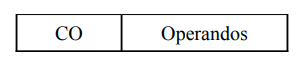
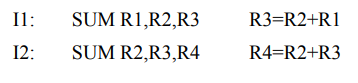
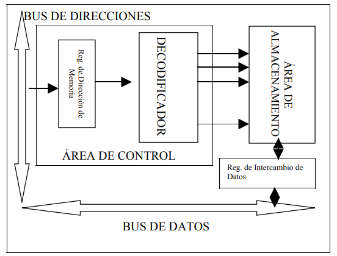

1º. Estructura general de un microprocesador>
El contador de programa (PC) es un registro que apunta a la dirección de memoria donde se
encuentra la proxima instrucción a ejecutar.
Una operación de lectura carga la instrucción en el registro de instrucciones (RI). Cada instrucción
tiene dos campos. El primero denominado, codigo de operación (CO),
expresa el tipo de operación que se va a realizar. El segundo, denominado Operandos (OPS) indica en
que tipo lugar se encuentran los comandos.
La Unidad de Control obtiene, a partir del código de operación, las señales de control necesarias
para ejecutar la instrucción. Estas señales de control son: tipos de operación que
ejecuta la ALU, señales de activación de RAM, de lectura/escritura, etc. Con el campo operandos se
activan los registros que intervienen en la operación.

El Registro de Estado son un conjunto de Biestables que indican condiciones del resultado (overflow o
el signo).
El Registro Acumulador almacena el resultado de las operaciones. Puede realimentar el resultado al
Banco de Registros para operaciones encadenadas o bien enviar el resultado al Bus de Datos.
La sección de procesamiento consta además de la Unidad Aritmético-Lógica (ALU) y de un Banco de
Registros.
La ALU está formada a su vez por una unidad aritmética y una unidad lógica. La primera
realiza las operaciones aritméticas básicas y suele estar formada por un sumador en C2 (incluso por
un multiplicador en algunos casos). Ambas unidades trabajan en punto fijo. Para realizar operaciones
en punto flotante se utiliza un coprocesador aritmético que es opcional (a partir del 486 suele
venir integrado en el microprocesador). La unidad lógica realiza las operaciones booleanas básicas
AND, OR, XOR, NOT y operaciones de desplazamiento y rotación.
El Banco de Registros se utiliza para almacenar los operandos. Está formado por varios
registros con funciones distintas según el tipo de microprocesador. En general suele tener entre 14
(Intel) y 32 (Motorola) registros.
2º. Funcionamiento de la Unidad Central de Proceso
Un programa a ejecutar está compuesta por un conjunto de instrucciones almacenadas en memoria. La
CPU es la encarga de ejecutar las instrucciones especificadas en el programa
El Procesamiento requiere de una instrucción denominada Ciclo de instrucción el cual está
constituido por dos etapas:
- Etapa de captación de una instrucción: Es una operación común a todas las instrucciones y
consiste
en la lectura de la instrucción de una posición de memoria. Tambien se denomina Ciclo de
captación.
- Etapa de ejecución de una instrucción: Puede suponer varias operaciones y depende de la
naturaleza
de la instrucción. También se denomina Ciclo de Ejecución.
Al comienzo de cada ciclo de instrucción, la CPU capta una instrucción de memoria, donde la CPU
siempre incrementa el PC despues de captar cada instrucción. Posteriormente la Unidad de Control
interpreta el Código de Operación
y generará las señales de control necesarias para llevar a cabo la ejecución de la instrucción.
La ejecución del programa consiste en la repetición del proceso de captación y de ejecución de las
instrucciones del programa.
En la ejecucion de un programa, los componentes funcionan de forma sincronizada realizando las
siguientes etapas:
- La CPU lee de memoria la primera instrucción
- La CPU decodifica la instrucción para conocer el tipo de operación que hay que realizar y donde
se
encuentran los operandos
- Se leen los operandos bien de memoria o de E/S
- Se ejecuta la operación
- Se guardan los resultados en memoria o E/S
- Se lee la siguiente instrucción
Este proceso se repite hasta terminar el programa
3º. Instrucciones: Campos CO Y OPS y Clasificación
Cuando se diseña un microprocesador, el primer paso que se da es definir su repertorio de
instrucciones. Este conjunto de operaciones va a definir la estructura que va a tener el
microprocesador y las conexiones entres sus elementos. El formato general de una instrucción es:

El Campo CO (Código de operación indica el tipo de operación que se va a realizar y el campo
de Operandos el lugar en el que se encuentra los operandos que intervienen.
El campo CO es utilizado por la unidad de control para generar las señales de sincronismo y preparar
así los elementos hardware que intervienen en la operación. El campo Operandos se utiliza para
activar los registros en los cuales se encuentran los operandos y el que va a recibir el
resultado de la operación. Cuando la operación es de Lectura/Escritura en memoria o en E/S, el campo
OP indica la dirección de la operación. Este proceso se denomina decodificación y lo realiza un
elemento hardware denominado decodificador.
Clasificación:
Las instrucciones de un microprocesador se pueden clasificar en los siguientes grupos:
- Instrucciones Aritméticas: Las realiza la Unidad Aritmética y son operaciones aritméticas
básicas
tales como suma, resta, desplazamiento, comparación, etc.
- Instrucciones Lógicas: Se realizan en la Unidad Lógica de la ALU. Pertenecen a este grupo las
instrucciones AND, OR, XOR, etc.
- Instrucciones de Entrada/Salida: Son operaciones de transferencia de datos entre la CPU y E/S.
Existen dos formatos estándar que son IN, OUT.
- Instrucciones de Acceso a memoria: Representan operaciones de lectura o escritura en memoria.
Los
formatos estándar son LOAD y SAVE.
- Instrucciones de salto: Implican una ruptura en la secuencialidad del programa. Pueden ser
condicional o incondicional. Los formatos estándar son JMP y J
4º. Sección de control: señales
Tiene como función generar las señales de control necesarias para sincronizar el funcionamiento
combinado de todos los elementos que intervienen en la ejecución de una instrucción. Consiste en una
estructura hardware que tiene como entrada el campo código de operación del registro de
instrucciones y la señal de reloj y como salida un conjunto de señales de control:
Control de E/S
Son señales que controlan a los elementos externos al microprocesador. Las señales de control de E/S
genéricas son:
- activación de Memoria (Enable Memory)
- Lectura/Escritura (R/W)
- Memoria / Entrada_Salida
Control de ALU
Expresan la operación que debe realizar la ALU y dan información sobre el resultado de la operación:
- Operación de la ALU
- Signo del resultado de la ALU
- Resultado cero
- Overflow
Control de Registros
Controlan el estado de carga de un registro
- Carga de un registro (LOAD)
- Inicialización del contenido del registro (RESET)
Control Multiplexores
Controlan el contenido de la salida del multiplexor de la Memoria Principal
Existen dos tipos de estrategias cuando se diseña una Unidad de Control: Control Cableado y
Multiprogramado. En el primero, cada señal se
obtiene mediante un conjunto de puertas lógicas. En el segundo, las señales de control están
almacenadas en memoria.
5º. Segmentación: Concepto y riesgo
Concepto de Segmentación
Durante la ejecución de un programa se sigue una secuencia ordenada formada por varias etapas
(generalmente 4)
Búsqueda de la Instrucción (IF)
El contador de programa (PC) guarda la dirección de la instrucción que se va a ejecutar. Esta
dirección es utilizada para leer en memoria la instrucción y depositarla en el registro de
instrucciones (RI). Mientras, el PC se va incrementando para apuntar a la siguiente instrucción
Decodificación (ID)
El código de operación de la instrucción es utilizado por la Unidad de Control para generar las
señales de sincronismo oportunas y el campo operandos se utiliza para seleccionar los registros que
intervienen
Ejecución (EX)
La ALU realiza operación que haya sido seleccionada mediante el Código de Operación y los registros
selecccionados en la etapa anterior.
Postescritura (WB)
El resultado obtenido por la ALU hay que escribirlo en el registro adecuado
Riesgos de la Segmentación
La Segmentación es una técnica que aumenta el rendimeinto de un microprocesador reduciendo el número
de ciclos por instrucción ejecutada. Aunque existen situaciones en las cuales se produce una ruptura
del cauce. Estas situaciones se denominan riesgos de la segmentación y
en general, obligan a detener el cauce y en algun caso, a limpiarlo y empezar de nuevo.
Existen dos tipos de riesgos de segmentación:
Riesgo por dependencia de datos
Se produce cuando una instrucción utiliza como entrada el resultado de la operación de la instrucción
anterior.
Supongamos la siguiente secuencia de instrucciones:

La instrucción I2 utiliza el registro R3 como operando para calcular el valor de R4, sin embargo, el
registro R3 se está calculando en la instrucción I1. Por tanto, para poder utilizarlo hay que
esperar a que I1 termine de ejecutarse.
Para resolver este problema existen varias soluciones:
- Detencion del cauce: Es la solución mas trivial. Consiste en detener la ejecución de I2 hasta
que
termine de ejecutarse I1. Esta solucion es la mas fácil de implementar físicamente pero es la
que
más disminuye el rendimiento del cauce.
- Ejecución fuera del orden: Consisten en aplazar la ejecución de I2 hasta que termine I1 y
mientras
ejecutar otras instrucciones posteriores que no utilicen el registro que origina la dependencia
de
datos.
Riesgos por salto
Ocurren cuando aparece una instrucción de salto condicional. Si la condición es cierta, se ejecuta
una serie de instrucciones, si es falsa, se ejecuta otro grupo distinto.
Puesto que el resultado de la condición no se sabe hasta finalizar la instrucción de salto, no
sabemos que instrucción es la que sigue.
Para solucionar este problema tenemos dos alternativas:
- Detencion del cauce: Hay que esperar hasta que sepamos el resultado de la condición y seguir
luego
por la instrucción que corresponda. Este método implica detener el cauce y por tanto, disminuye
el
rendimiento de la segmentación
- Ejecución especulativa o Predicción de salto: Consiste en suponer que el salto no va a
producirse y
seguir ejecutando la siguiente instrucción sin detener el cauce. Cuando sepamos el resultado de
la
condicion, si el salto no se produce, la elección que hicimos era correcta y el cauce siuge.
Si el salto si se produce, hay que limpiar el cauce y empezar por la instrucción que le
corresponda.
Tambien existen circuitos que calculan estadísticamente si debe o no realizar el salto, en este
caso
el número de aciertos es muy alto, dicho chip se llama BTB.
MEMORIA
1º. Registros: Visibles al usuario, de control y de estado
En el interior del micro existen unas celdas de memoria de alta velocidad que permiten a la CPU
almacenar datos temporalmente mientras se efectúa alguna operacion. Son los llamados registros
internos, que constituyen lla memoria interna del procesador. Están formados por un conjunto de
bits que manipulan en bloque. Este número varia dependiendo
de la CPU, pero siempre son múltiplos de ocho y resultan imprescindibles para su funcionamiento.
El tamaño del registro indica el número de bits que puede manipular a la vez el procesador;
cuanto mayor sea, más potente será el micro, pues podrá trabajar con mas cantidad de información
a la vez. Las primeras CPUs tenían 8 bits. La CPU de los primeros PC disponian de registros de
16 bits. El 386 de Intel fue el primero modelo de CPU que ingluyó registros de 32 bits.
Los registros de la CPU se pueden dividir en dos tipos: Registros visibles al usuario y
Registros de control y de estado.
Registros de control y de estado
Estos registros se definen como aquellos que pueden ser referenciados por lenguaje ensamblador o
lenguaje máquina, con el fin de optimizar el uso de los recursos. Se distinguen 4 categorias:
- Registros de Dirección: Contienen las direcciones de memoria donde se encuentran los
datos. Algunos de los registros de dirección más usados son los registros índice y los
punteros
de pila
- Registros de datos:Se usan para contener datos. Esto hace que aumente la velocidad de
proceso, sobre todo cuando un dato es solicitado, porque con frecuencia se deja en uno de
estos
registros y no es necesario acceder a la memoria.
- Registros de condición: Son bits fijados mediante el hardware que indican, por
ejemplo,
si una operación entrega un resultado positivo, negativo o nulo, si hay overflow
(desbordamiento), etc.
Registros de control y de estado
Son los que intervienen en la ejecución de las instrucciones. Distinguimos los siguientes:
- Contador de Programa (PC), también llamado Contador de Instrucciones. Contiene la
dirección de la siguiente instrucción a ejecutar, su valor es actualizado por la CPU despues
de
capturar una instrucción
- Registro de Instrucción (RI). Contiene el código de la instrucción actual. Aquí se
analiza el código de operación
- Registro de Dirección de memoria (RMD - MAR) Contiene la dirección de una posición de
memoria, donde se encuentra o va a ser almacenada la información; este intercambio se
realiza a
través del vus de direcciones
- Registro de Intercambio de memoria (RIM - MBR). Recibe o envía (dependiendo si es una
operación de lectura o escritura) la informacióno el dato contenido en la posición apuntada
por
el RMD; el intercambio de datos con la memoria se realiza a través del bus de datos.
Estos cuatro registros funcionan de la siguiente forma:
- El registro contador de programa (CP) tiene la dirección de la próxima instrucción a
ejecutar.
- Para buscarla, el contenido de esa posición es pasada al RMD
- La instrucción apuntada por el RDM se carga en el RIM y desde aquí al R1
- El CP se incrementa en 1, para apuntar a la siguiente instrucción a ejecutar
2º. Memoria caché: Estructura, organización - sin tipos ni características
Estructura
Una caché es una memoria rápida situada entre la CPU y la RAM. Esta rapidez se consigue a partir
de la tecnología que utiliza y del principio de localidad de referencias:
"La próxima referencia a la RAM que haga la CPU se encuentra localmente muy próxima a la
referencia actual".
Una caché está constituida por dos bloques: el directorio y la zona de almacenamiento.
- El directorio contine información sobre las direcciones de memoria cuyos datos se encuentran
en
la caché. Está construido con memorias asociativas.
- La zona de almacenamiento contiene los datos de las direcciones incluidas en el directorio.
Está
construida con memoria RAM (generalmente estática, SRAM).
Cuando la CPU solicita un dato (referencia una dirección), el controlador de caché comprueba si
esa dirección está en el directorio. Si está, lee el dato de la zona de almacenamiento y lo
envía a la CPU, en caso contrario lee el dato de la RAM y lo guarda en la caché (junto con las
direcciones que se encuentran a continuación) y envía una copia a la CPU.
Organización
Entendemos por organización de caché la estrategia de colocación de los datos en la zona de
almacenamiento de forma que se optimice su uso.
- La memoria principal se divide en bloque de información de tamaño fijo. Cada bloque está
formado
por varias palabras que se encuentran, localmente, en posiciones contiguas.
- La zona de almacenamiento de la cachése divide en marcos de bloque. Cada marco de bloque
puede
guardar un bloque de memoria.
- El directorio de caché se divide en entradas. Cada entrada se refiere a un marco de bloque y
guarda información sobre el bloque que almacena.
- Cuando se transfiere información entre la caché y la RAM se envía un bloque completo. Este
bloque se guarda en la zona de almacenamiento y su identificador se escribe en la entrada
del
directorio correspondiente.
Existen varias formas de organizar los datos en la caché. La organización directa es la más
simple de implementar pero la menos eficiente, la organización asociativa es la más eficiente
pero la más costosa. Por último, la organización asociativa por conjuntos es un compromiso entre
las dos anteriores.
3º. Estructura de la memoria RAM
En la Memoria Principal o RAM es un dispositivo destinado a almacenar dos tipos de información:
el programa o secuencia de instrucciones a ejecutar y los datos que manejan dichas
instrucciones. La manipulación de los programas y los datos está dirigida por la CPU y más
concretamente por la Unidad de Control.
El esquema general de una RAM viene dado en la figura siguiente:

El área de control es la encargada de localizar la posición de memoria que se corresponde con la
dirección que se envía por el bus de direcciones. Consta de un Registro de Direcciones de
Memoria y un Decodificador que tiene como entrada los n bits del bus de direcciones y 2ª salidas
para cada una de las posiciones de memoria.
El área de almacenamiento está formada por una matriz de celdas básicas de forma que cada fila se
corresponde con una posición de memoria. Cada celda básica está formada por un dispositivo de
almacenamiento binario que puede mantener un estado lógico (0 o 1) durante un tiempo limitado y
cuyo valor se transmitirá al Registro de Intercambio de Datos cuando la fila se activa
para una operación de lectura. Cuando la operación es de escritura, el proceso es inverso.
La RAM está formada por un conjunto de casillas o posiciones de memoria capaces de almacenar un
dato o unas instrucción. Cada casilla contiene 8 bits, de manera que si la RAM es de 1 KB
dispondra de 1024 celdas de memoria y podrá almacenar 1024 caracteres. En la RAM es donde se
almacenan los datos y programas que se ejecutan en el ordenador.
Cuando se apaga el ordenador el contenido de la RAM desaparece; por eso se dice que esta memoria
es volátil.
Cada una de las casillas que forman la memoria se identifica con un número; conocido como
dirección de memoria. La finalidad es que la Unidad de Control pueda diferenciar unas casillas
de otras.
Para poder realizar operaciones de lectura o de escritura de una celda de memoria o en una celda
de memoria, utilizan: el registro de dirección de memoria (RDM), el registro de intercambio o de
datos (RIM) y el selector de memoria o decodificador de direcciones, que es el dispositivo que
conecta la celda de memoria cuya dirección figura en el RDM con el RIM, posibilitando la
transferencia de datos en un sentido o en otro, dependiendo de la operación de lectura o de
escritura.
Todas las operaciones de lectura y de escritura están dirigidas por la Unidad de Control. En una
operación de lectura se efectúan los siguientes pasos:
- En el RDM se almacena la dirección de memoria de la celda que contiene la información
- El selector de memoria selecciona la dirección contenida en el RDM y carga en el RIM la
información contenida en esa celda
- Transfiere el contenido del RIM al registro de trabajo de la CPU para que allí se procese
En una operación de escritura, se efectúan los siguientes pasos:
- Los datos a escribir en la memoria, que ya han sido procesador por la CPU, llegan al RIM
- En el RDM está la dirección de la celda destino de la información
- El selector de memoria selecciona la celda destino y se carga el contenido de RIM a la celda
apuntada por el RDM
En la memoria principal cada celda se implementa mediante un minúsculo condensador.
RAM Dinamica o DRAM, este nombre procede del hecho de que la carga del condensador cambia
continuamente. Es decir, aunque el valor lógico de cada celda permanezca siempre a 1, el
condensador va perdiendo internamente su carga a lo largo del tiempo, es decir, si esta cae por
debajo de un cierto umbral, el circuito de lectura no podrá distinguir entre carga positiva o
negativa. Para evitar que esto ocurra, la carga debe refrescarse periódicamente a través de unos
circuitos incluidos en el controlador de memoria.
El coste y espacio físico por celda de las memorias implementadas con condensadores es bastante
mejor que en el caso de las memorias estáticas, implementadas con condensadores.
Los parámetros que describe la funcionalidad de la memoria es su tamaño (suele indicarse en MB) y
los parámetros que mejor cuantifican el rendimiento son:
4º. Descomposición de la memoria: Bancos, módulos, chips y celdas
Bancos
La memoria del PC se encuentra distribuida en bancos. Estos pueden tener distinta longitud perdo
deben tener la misma anchura que además deberá coincidir con el bus de datos
Ventajas de descomponer la memoria en bancos:
Mientras uno de los bancos está funcionando, el resto de ellos se encuentran desactivados. Se
comparte circuitos sin producir conflicto
Dota de mayor flexibilidad al sistema de memoria a la hora de repartir el espacio total de
almacenamiento
Permite la configuración de un mapa de memoria heterogéneo, que permite direcciones de memoria
de diferentes características. Es conveniente que las memorias más rápidas se encuentren en los
bancos con una numeración más baja, ya que suelen ser los mas usados
Módulos
Cada banco se descompone en módulos de la misma anchura y longitud, pero también con la misma
velocidad y características. Puede haber bancos con un solo módulo. Los más populares son SIMM,
DIMM y RIMM.
Chips
Los módulos están formados por chips. Todos los de un mismo módulo tendrán que ser idénticos,
salvo el encargado de albergar los bits de paridad (suelen ser menos anchos)
La anchura del módulo será la suma de las anchuras de cada uno de los chips que lo componen
Cuando se requiere aumentar la longitud doblando el número de chips, cada mitad actuará siempre
por separado, pero cuando se duplica la anchura, todos los chips deberán actuar al mismo tiempo
Celdas
Cada chip está formado por una matriz de celdas a las que se accede por dirección. Cada dirección
está formada por su dirección de columna, y su dirección de fila. En todos los chips se accede
al mismo tiempo a la misma dirección de celda, y entre todos nos da la palabra
5º. Conceptos: ROM, PROM, EPROM, Flash Memory
Conceptos
- ROM: La ROM es la memoria no volátil lo que significa que la información se almacena
de
forma permanente en el chip. La memoria no depende de la corriente eléctrica para guardar
los
datos.
- PROM: La memoria PROM puede ser programable por el usuario, una vez que el usuario la
ha
programado ya que no se puede cambiar más su información, con lo cual se convierte en una
memoria ROM, permitiéndonos sólo su lectura.
- EPROM: Tambien es conocida con el nombre de PROM - regrabable, se llama así porque
nos
permite grabar y borrar tantas veces como se quiera, su información se borra mediante
radiaciones ultravioleta. Presenta el inconveniente que no se puede borrar sólo una parte de
memoria, sino que se borra toda la información.
- Flash Memory: Es un tipo de EEPROM que se puede reprogramar en bloques. Se usa en la
BIOS
de los equipos.